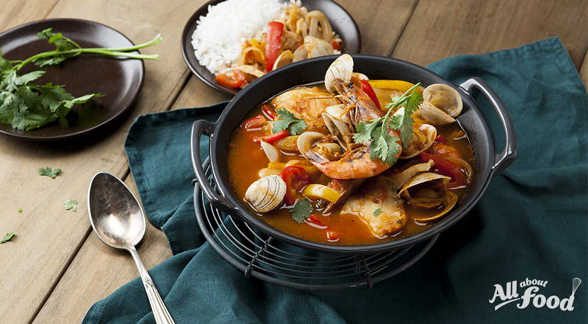

해물탕 황금레시피
레시피 동영상
유사한 동영상 더보기
조리방법
- 새우와 가리비, 굴은 연한 소금물에 살살 흔들어 씻은 뒤 헹궈 물기를 뺀다.
- 바지락은 연한 소금물에 담가 해감을 토하게 한 뒤 비벼 씻고 맑은 물에 헹군다. 홍합도 껍질끼리 문질러 씻어 헹군다.
- 배춧잎은 5~6㎝ 길이로 썬 뒤 1㎝ 폭으로 썰고, 호박은 5㎝ 길이로 채 썬다. 풋고추와 붉은 고추는 송송 썰어 씨를 턴다.
- 냄비에 분량의 물을 붓고 바지락과 홍합을 넣어 입이 벌어질 때까지 삶은 뒤 건더기는 건져내고 국물은 잠시 두었다가 맑은 물만 받은 다음 국간장과 다진 마늘, 청주, 소금으로 간을 맞춘다.